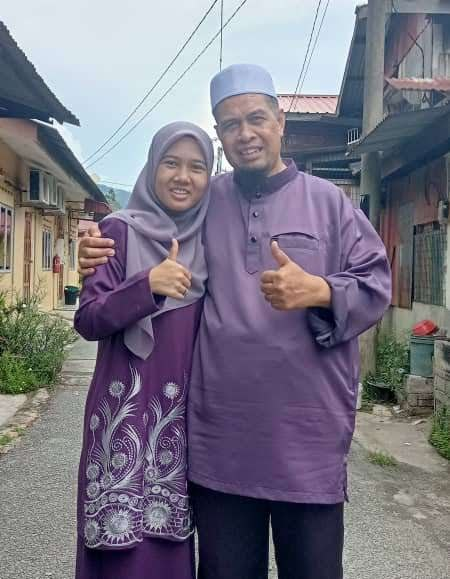
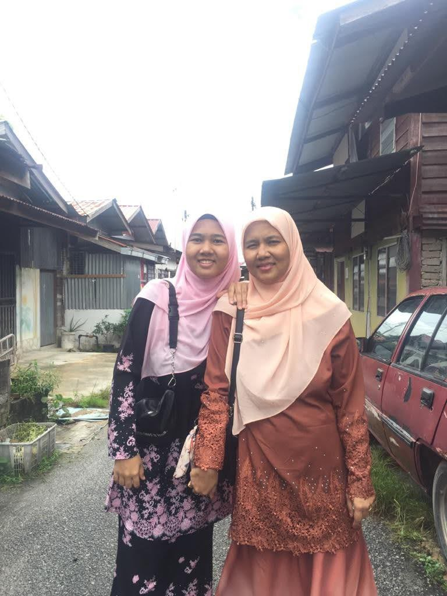
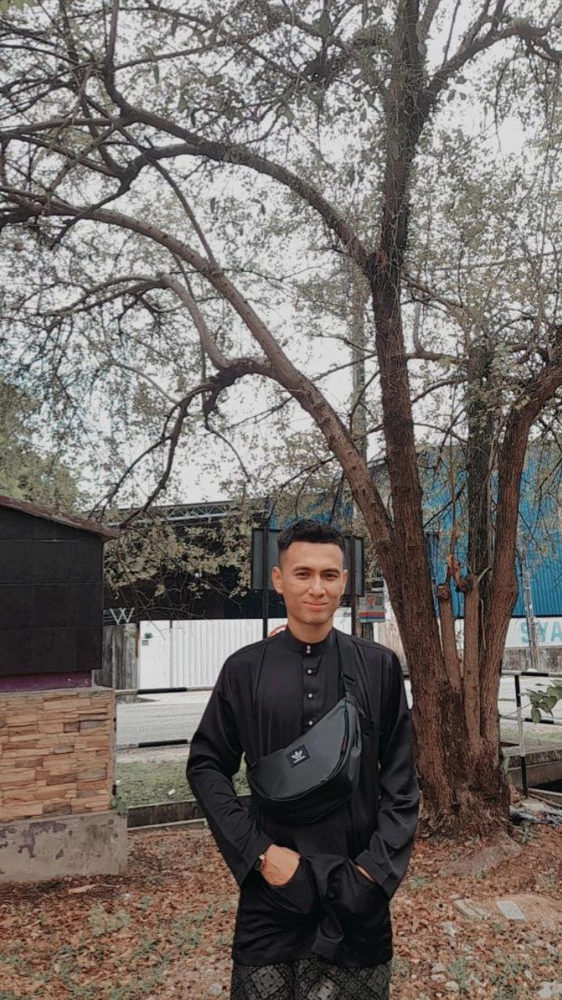
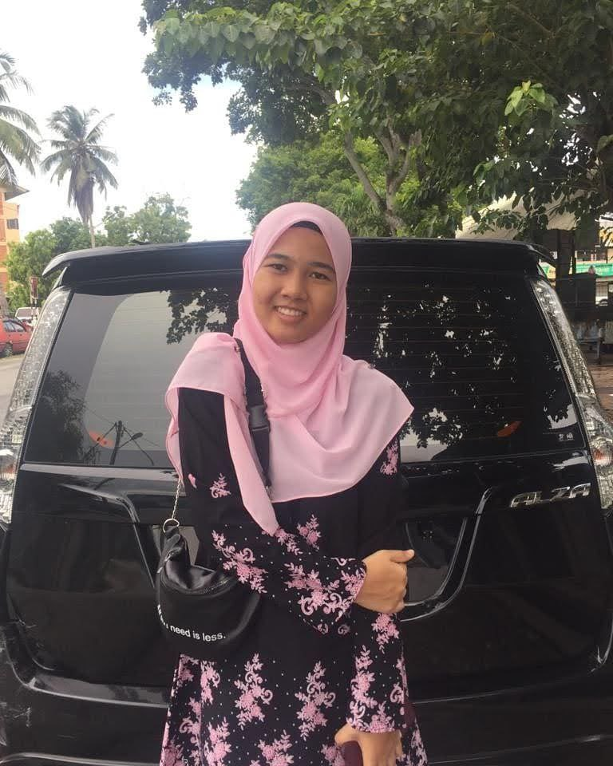
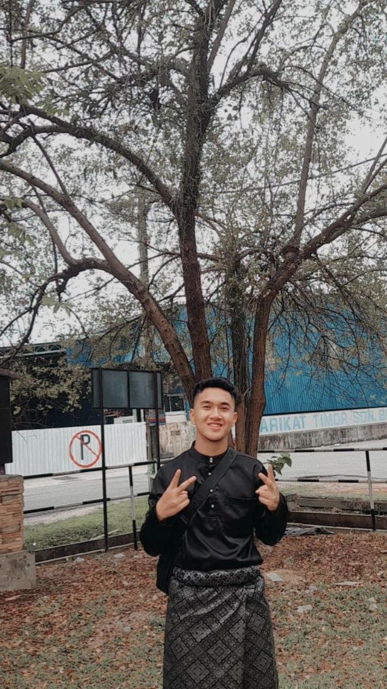
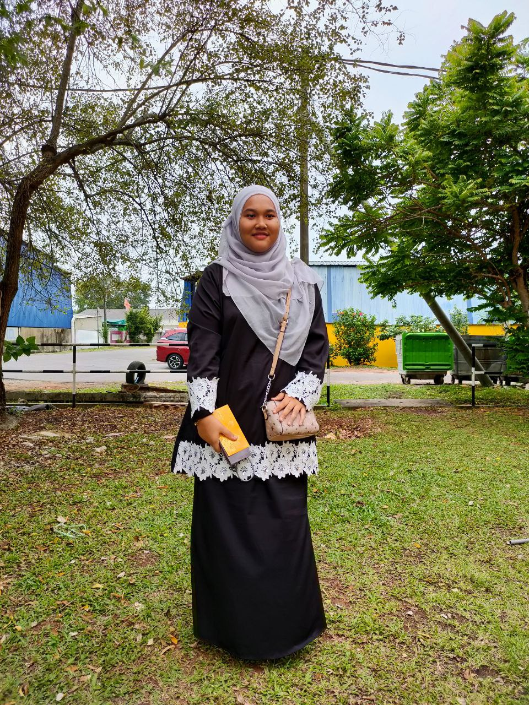

THIS IS MY BIG FAMILY
1) BABA

This is my father. His name is Abdul Samad bin Jaafar. He is already 60 years old. My father is self-employed. The most special thing is that my father is strict but he is very loving. He is my first love, I love him very much.
2) UMI

Nadiyah binti Ishak. This is my heaven. She is 49 years old. My mother is a housewife. My mother who is loving and concerned with every attitude of her child. I love my mother very much.
3) KAKAK

This is my eldest sister. Her name is Nur Awatif. She is 28 years old and already has a daughter. She is a primary school teacher.
4) BG NGAH

This is my brother. His name is Muhammad Hanif. He is 26 years old and works as a restaurant assistant. He is a strict and caring brother.
5) KAK CIK

Nur Samihah. This is my second sister. She is 24 years old and still studying at Unishams.
6) MYSELF

7) AMAN

This is my younger brother, Abdul Rahman. He is 18 years old and is continuing his studies at SMA Sungai Petani as a STAM student.
8) ADIK

This is my youngest sister named Izzatul Husna. She studied at SMA Fauzi and was 15 years old.